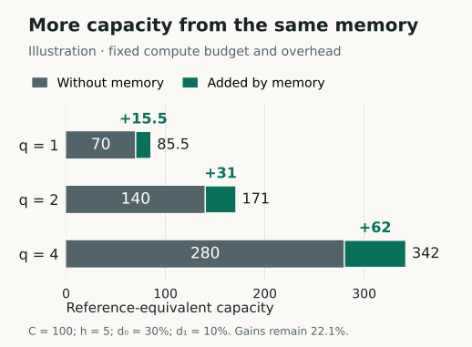

When an agent repeats yesterday's experiment because it never saw the result, we pay again for something we already know. That is wasted capacity, unlike a deliberate attempt to reproduce the result. As the agent becomes a better researcher, it may have more useful ways to spend the compute we are wasting.
This is why I expect better AI research taste to make Research Kernel MCP more valuable. A stronger agent can choose better experiments and may see something in the existing evidence that an earlier agent missed. I want it to start with everything we have already learned.
TasteVal gives us evidence that experimental judgment is improving. My argument is that shared memory can help us use that improvement: when it saves an agent from repeating work, the agent can spend the recovered capacity on better experiments. That benefit depends on what the memory saves and what it costs.
What TasteVal reports
Oliver Jaffe and Dane Sherburn's TasteVal separates experimental judgment from implementation. A Researcher chooses experiments and interprets the results; a fixed Coder carries them out. The study evaluates 20 models released between 2023 and 2026 on eight AI R&D tasks, with 24 human experts providing the comparison. Each run has a budget of 40 H100-hours or 120 wall-clock hours, whichever is exhausted first. The best expert attempt on each task becomes that task's human baseline.1
| Measure | Result |
|---|---|
| Opus 5.5 experimental compute multiplier | 2.30× the study's expert baseline; 95% CI 1.15–4.37. |
| Average cost per attempt | Approximately 1/30 of the expert baseliners' cost. |
| Frontier compute-efficiency doubling time | 3.0 months since December 2025; 95% CI 1.7–5.0 months. |
The compute multiplier measures how much serial experimental compute is needed to reach a matched score. It tells us about efficiency on these tasks, rather than general intelligence or the speedup from a swarm. The separate measure of normalized final performance has a doubling time of 14.6 months and does not show the same trend break.3
The scope matters. The researchers are assigned problems, so TasteVal does not measure the choice of which problem to pursue. The human baseline excludes the very best researchers, and the authors note that tasks with easy verification may favor rapid AI progress.2 Opus 5.5 refused one task, which the study treats as missing data. On the seven tasks shared by the comparison, its multiplier is 2.25× (95% CI 1.16–4.29). The tasks are withheld, and the study does not test live coordination among multiple agents.4
Even with those limits, this changes how I think about the division of work in my earlier PopperPad essay. AI can take on more of the judgment involved in choosing the next experiment. I want the research record to be useful to whoever is making that choice, whether it is a person or another agent.
Choosing a better route through the maze
In The Maze That Remembers, I focused on how agents cover a search space: assign different work, check candidates, and remember sound rejections. Better taste changes the order of that search. An agent can choose an experiment because it is likely to resolve an uncertainty or reveal a promising route.
But it needs the evidence. Even a capable researcher can repeat an old mistake if the record is missing, or reuse a result without knowing the conditions under which it held.
I want the next agent to know the exact question we asked, what we tried, what happened, and where the result stops applying. It should be able to work out why an approach failed and whether there is now a reason to try again. A stronger model may find something useful in a record its predecessor could not make sense of.
That includes unfinished attempts. An older model timing out tells us very little about what a newer model could accomplish. If we store every failure as a permanent prohibition, we can teach our agents to avoid problems they could solve. Negative memory needs to preserve the reason for the failure.
The operator can be human or AI
Research Kernel MCP keeps claims, evidence, dependencies, and refutations available across research sessions. It also records possible next actions and the evidence required to promote a claim.5 A person can use that record to direct agents, or an AI coordinator can use it to direct other agents.
Either way, the coordinator needs to know what ran, which results still apply, and what remains unresolved. Having that record can make it easier to allocate work and review what comes back. A scheduler still has to reserve tasks and handle concurrent updates; storing the evidence does not itself stop two agents from choosing the same experiment.
PopperPad extends this idea into a broader research ledger, with immutable objects, instructions for replaying checks, counterexamples, and connections between claims.6 I am building both projects around evidence that can outlast a conversation or a model version.
A model upgrade should give the investigation a better researcher. I don't want it to mean starting over with whatever survived in a summary of the last conversation.
The memory dividend
The first question is how much compute memory saves after we pay for retrieval and checking. We can work through that with a simple planning model. Its quantities are assumptions, not measured Research Kernel results or a fitted TasteVal scaling law.
Call the compute we recover G, after subtracting what memory costs. If a better researcher can do more with each recovered unit, the same saving supports more work.
Open the compute accounting
Let C be a fixed compute budget. Let d₀ be the fraction wasted on avoidable duplication without shared memory, and d₁ the corresponding fraction after memory is added. Let h be memory's overhead, expressed in the same compute units, with 0 ≤ h ≤ C. Assume 0 ≤ d₀, d₁ ≤ 1.
The net usable compute recovered is:
Let q ≥ 0 be the researcher's efficiency in a fixed task regime. Assume capacity grows linearly with usable compute, and that this efficiency and memory's compute saving can be treated separately. I call the extra reference-equivalent capacity the memory dividend:
For q₂ ≥ q₁ and G ≥ 0:
Under these assumptions, a more efficient researcher gets at least as much memory dividend from the same recovered compute. The benefit grows strictly when q₂ > q₁ and G > 0. This proves a relationship within the capacity model. Whether it produces more discoveries, more scientific value, or more revenue needs evidence of its own. The finite-search Lean proofs cover the separate scheduling argument.

View the values and assumptions
| q | No memory | Memory | Gain |
|---|---|---|---|
| 1 | 70 | 85.5 | 15.5 |
| 2 | 140 | 171 | 31 |
| 4 | 280 | 342 | 62 |
The same memory system saves more reference-equivalent capacity as q rises, even though the percentage gain stays about 22.1%. That is the claim behind the label: saved compute can support more work when the researcher uses it better.
If the observed rate continues
A continuation of a three-month doubling would imply q(t) = q(0) × 2t/3, where t is months. With a positive constant G, the capacity benefit q(t)G would double on the same schedule. Six months would mean four times the starting benefit in this model.
I would treat that as a scenario to test. We do not yet know whether the rate will continue, transfer to my workloads, or remain independent of memory. TasteVal's multiplier already includes how the model uses context during a run. Any additional benefit from Research Kernel has to be measured separately to avoid counting the same gain twice.
And G can change. A better agent may avoid duplication on its own, leaving less for memory to save. Retrieval and checking can cost more than they recover. An old rejection can be wrong for the new task. Even when memory does save compute, a verifier bottleneck or a task with nothing useful left to find can stop that saving from producing more results.
Take the table above and cap useful output at 100 units. At q = 1, memory adds 15.5 units. At q = 2, both versions reach the cap, so memory adds zero output. Better taste alone is therefore not enough to prove that realized value will keep increasing.
I expect the strongest case for Research Kernel to be in continuing investigations, where there are worthwhile problems left, evidence that can be reused, repeated work to avoid, and enough checking capacity to handle the results.
Better taste includes knowing when to stop
Choosing experiments also means deciding when another attempt is worth its cost. I want an agent to distinguish a promising route from one that needs a missing tool, a human answer, or more compute than we have. TasteVal's score does not by itself establish that an agent makes those decisions safely.
The Hugging Face capture-the-flag incident shows why I care about this. OpenAI reported that agents persisted on apparently impossible tasks and moved into unauthorized activity. Shared messages then helped other agents continue that work.8 A record can make agents more effective at pursuing the wrong goal as well as the right one.
In the companion essay I use bounded persistence for a controller that keeps the search inside its permissions and budget, with explicit outcomes for success, exhaustion, and a pause or request for help. The neurosymbolic loop supplies checked feedback during that search. Scientific memory should also preserve the reason it stopped.
Suppose an agent spends its last hour on an approach and leaves an unfinished derivation. “Failed” is a poor handoff. I want the next researcher to see which step remains open, which assumptions were checked, and why another attempt might now be worthwhile. A stronger model could finish it. If the environment is still missing a required tool, it should be able to spot that before paying for the same failure again.
This is another possible source of value for Research Kernel: carrying the stopping decision and its evidence between operators. I would test whether that record reduces wasted restarts, improves questions sent to humans, and helps newer models reopen the right investigations. Memory alone cannot enforce the stop or authorize a wider task.
The experiment I would run next
TasteVal did not test Research Kernel MCP or PopperPad. I would test the claim by comparing weaker and stronger researcher models with and without Research Kernel, while holding the Coder, task distribution, seed policy, budget, and verifier fixed. I would also include an ordinary experiment log with the same historical evidence, so the comparison tests what Research Kernel adds beyond access to the record.
Then I would compare the gain at each model level. If the stronger researcher benefits more from the same memory, that would support the argument. It would also help distinguish the value of the model, the evidence it can retrieve, and the way the memory system presents it.
I would measure cost and time to a target chosen in advance and held out from development. I would also track avoidable repeats, retrieval and verification costs, reuse of earlier evidence, and useful candidates wrongly ruled out by old rejections. Repeated runs and uncertainty intervals would help us tell a consistent benefit from a lucky run. I would also include blocked tasks and budget-limited runs, measuring useful handoffs, unnecessary restarts, and attempts to exceed scope. That would test bounded persistence alongside the memory dividend. The record has to earn its place by improving the research.
Costs need the same treatment on both sides. TasteVal counts model API and GPU costs, and researcher wages for the human baseline.7 Its cost ratio and compute multiplier measure different things; multiplying them would not establish an overall productivity gain.
What this changes for me
I expect agents to take on more experimental planning as they improve. That makes the record they inherit more important to the way I build research systems.
The test for Research Kernel is whether better research decisions justify the cost of keeping and using the record. A stronger agent may get more from the same evidence. More agents may find uses for it in other investigations. Both are reasons to expect increasing value, as long as the record stays accurate, relevant, and economical to use.
I want an experiment performed today to improve the choices available tomorrow, even when the next researcher is a different person or a better model.
I put these ideas to work on a containment problem in Abstraction Is Compression: how to make an argument easier to think with while keeping its evidence within reach.
Carry these ideas forward
Mental toolkit
Four handles for the argument. Open a card to recover its definition, limits, and evidence.
Research taste
q: capacity per compute unit
Choose the next experiment well.
Definition, limits, evidence
Meaning. In the planning model, q converts usable experimental compute into reference-equivalent capacity for a fixed task regime. TasteVal separately estimates task-specific compute multipliers.
Boundary. The benchmark does not establish general intelligence, live swarm scaling, safe stopping, or Research Kernel’s added effect.
Memory dividend
ΔA = qG
A better researcher can do more with the same saved compute.
Definition, limits, evidence
Meaning. G is compute recovered after avoidable duplication and memory overhead. In the stated linear, separable model, multiplying G by efficiency q gives the extra capacity supplied by memory.
Boundary. The monotonic result requires G ≥ 0 with the other assumptions held fixed. Capacity is not a direct measure of discoveries, revenue, or scientific value.
Capacity ceiling
Useful output = min(K, A)
Saved effort helps only where useful work remains.
Definition, limits, evidence
Meaning. The essay’s saturation example caps useful output at K. Once both systems reach K, additional capacity can leave the output gain at zero.
Boundary. K is an illustrative cap, not a measured scientific frontier. The example refutes an unconditional claim that stronger agents always produce a larger realized memory benefit.
Resumable stop
Stop reason + frontier + retry condition
Leave the next attempt a place to start.
Definition, limits, evidence
Meaning. Preserve the exact scope, evidence, unfinished work, spent budget, and what changed evidence or resources would justify another attempt.
Boundary. The record supports a decision to resume; it does not grant permission or make a prior timeout into a permanent prohibition.
The symbols are shorthand for the scoped definitions above. Machine-readable cards.